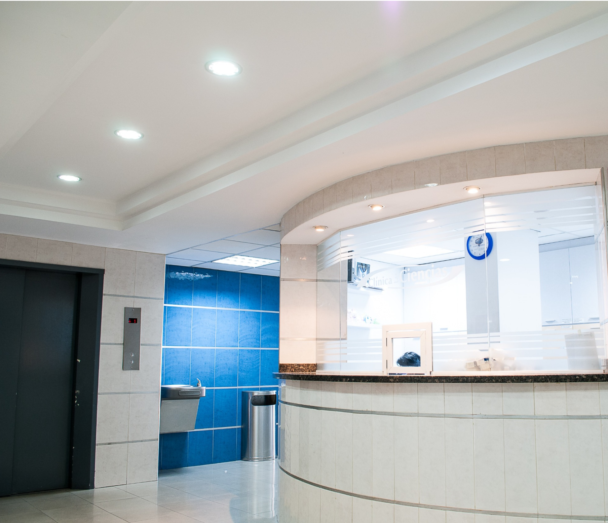

Пациенты, коллеги, деловые партнёры — мы открыты для всех, кто придёт к нам с болью, страхами, надеждами, вопросами, предложениями и с конструктивной критикой. После того как вы побываете в нашем центре, мы будем рады узнать, насколько оправдались ваши ожидания — так мы сможем увидеть себя вашими глазами и стать лучше. Мы верим, что своевременная, качественная и доступная медицинская помощь — это реально. Это то, что мы стремимся дать всем обратившимся в нашу клинику.
| Хирургия | Травмотология | Стоматолоия |
|---|---|---|
| КТ,МРТ | Диагностически исследования | Ультразвуковая диагностика |
| Анализы | Офтальмология | Урология |
| Гинекология | Оториноларингология | Онкология |
Врачи специалисты, работающие в нашей поликлинике, являются высочайшими специалистами в своей области. Именно поэтому, в случае возникновения любых симптомов недомогания лучше не ставить себе диагнозы самостоятельно, а записаться на прием. При необходимости после первичного осмотра, Вы можете в тот же день сдать ряд анализов в лаборатории нашей поликлиники и после получения результатов направиться к узкому специалисту для консультации, дополнительного обследования, лечения или совместного наблюдения.
Режим работы:
Ежедневно 08:00 до 20:00
Суббота 09:00 до 18:00
Воскресенье 09:00 до 16:00
Режим работы прививочного кабинета:
Понедельник – пятница, с 08:00 до 20:00
Перерыв на уборку и кварцевание: с 13:00 до 14:00
Единая медицинская справочная служба: 122 и 8 (495) 123-45-67
Аптечный пункт: 8 (495) 123-45-67 доб. 5724
Oтдел кадров: +7 (495) 123-45-67 доб. 1104
Email: privateclinick@zdrav.mos.ru
Единая медецинская справочная служба: 122
Наш адрес: 109451, г. Челябинск, ул. Строительная, д. 2, подъезд 2
©2023 Все права защищены Политика конфиденциальности